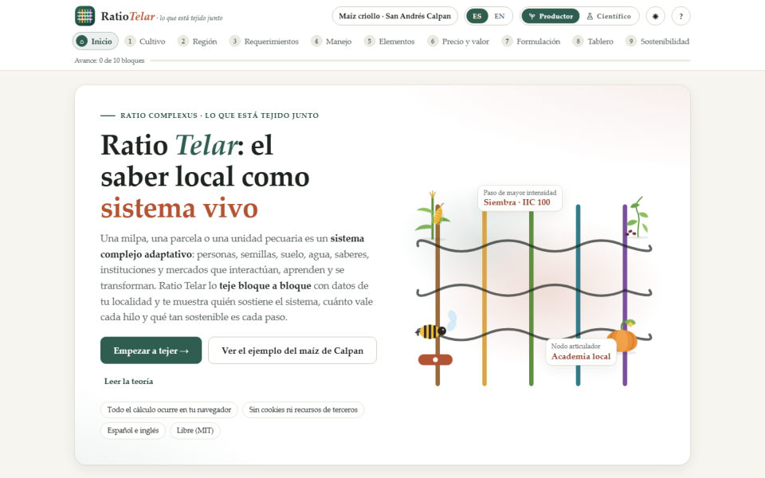

Ratio Complexus · ficha técnica del software
El conocimiento agrícola local como sistema complejo adaptativo
Héctor Tecumshé Mojica-Zárate1 · Óscar Díaz-José1 · Luis Ángel Barrera-Guzmán1 · Guadalupe Velázquez-Vázquez2
1 Centro Académico Regional Sede Huatusco, Universidad Autónoma Chapingo, México · 2 Benemérita Universidad Autónoma de Puebla, México · ORCID 0000-0002-9067-3983
DOI 10.5281/zenodo.23293557 Versión 0.3.0 · 2026 · Licencia MIT
App: https://hectortecumshe-ai.github.io/RatioTelar/ · Código: https://github.com/hectortecumshe-ai/RatioTelar

Ratio Telar es una aplicación web libre, bilingüe (español e inglés) y de un solo archivo, que funciona en el navegador sin servidor ni recursos de terceros. Representa una milpa, una parcela o una unidad de producción agrícola o pecuaria como un sistema complejo adaptativo: sus elementos (actores, instituciones, insumos, equipo, recursos naturales y financieros, conocimientos, políticas, perturbaciones y productos) se vuelven nodos y sus interacciones en las actividades de manejo, vínculos ponderados por el valor que el sistema les asigna. Integra el Stack de Conocimiento Local del maíz criollo de Calpan, Puebla (Díaz-José et al., 2026), el catálogo geoestadístico del INEGI hasta la localidad, el análisis de redes, un calendario circular de actividades y la evaluación de la sostenibilidad con el índice de Sarandón (2002), los 17 Objetivos de Desarrollo Sostenible y la huella de carbono del IPCC, un cladograma del vecino más cercano y escenarios prospectivos a 2, 5 y 10 años. Ofrece una vista para productores y otra para científicos.
| 1 · Cultivo | 18 cultivos (uva, maíz con las 64 razas de CONABIO, chayote, frijol, calabaza, chile, café, cacao, aguacate, maguey, nopal, jitomate, trigo, caña, jamaica, maracuyá, guanábana, mango) y 9 especies, con variedades, tipos o razas; bovinos por propósito, sistema y raza; apiario; granja de traspatio. Cultivos, especies y sistemas propios. |
| 2 · Región | Mapa de México; 32 estados, 2,478 municipios y 54,357 localidades del INEGI con población, altitud y coordenadas. |
| 3 · Requerimientos | Requerimientos técnicos tradicionales (las cinco reglas básicas del Stack) e innovados en la localidad. |
| 4 · Manejo | 38 pasos y sus actividades tradicionales, actividades innovadoras, impacto por compartimento y fechas de las actividades principales. |
| 5 · Elementos | 63 elementos del caso en 10 categorías; vínculos estructurales documentados. |
| 6 · Precio y valor | Precio por hectárea y valor en cuatro dimensiones (económica, de uso, cultural, ecológica); catálogo propio exportable en CSV. |
| 7 · Formulación | Modelo del sistema, propiedades emergentes y formulación: wij = Σa √(vi·vj). |
| 8 · Tablero | Red ponderada, centralidades, comunidades (Louvain), correlaciones φ (matriz y por elemento), calendario circular y cladograma del vecino más cercano (enlace simple sobre distancias 1/w). |
| 9 · Sostenibilidad | Suma y resta por compartimento (suelo, agua, atmósfera, vegetación, fauna), índice por paso, ISGen de Sarandón, 17 ODS y huella de carbono. |
| 10 · Prospectiva | Escenarios deseable, tendencial y no deseado a 2, 5 y 10 años: clima (IPCC, 2018; Zhao et al., 2017), adopción de innovaciones (Rogers, 2003), precios, costos y mano de obra como supuestos editables. |
| 11 · Informe | Resumen redactado, calendario, cladograma, prospectiva, tablas, CSV, impresión o PDF y proyecto completo en JSON. |
Motor de redes frente a NetworkX 3.7 (Hagberg et al., 2008).
| Prueba | Diferencia máxima |
|---|---|
| Red de Krackhardt (1990): intermediación, cercanía, agrupamiento, vector propio, camino medio | < 0.00005 ✓ |
| Red ponderada de prueba: intermediación con distancia 1/w | 0 ✓ |
| Red real del maíz (60 nodos, 158 vínculos): intermediación ponderada | 0 ✓ |
| Modularidad Q de la partición (0.4496), agrupamiento (0.5252), camino medio (2.9017) | 0 ✓ |
| Cladograma frente a SciPy 1.18: alturas de unión y correlación cofenética (3 subconjuntos) | < 10−14 ✓ |
Reproducción del caso publicado (Díaz-José et al., 2026).
| Pasos del Stack · reglas básicas | 38 · 5 ✓ |
| Hojas del dendrograma (Figura 3) | 38 ✓ |
| Participantes (Cuadro 1) | 100 ✓ |
| Valores de IIC publicados | 11 ✓ |
Huella de carbono: factores por defecto del IPCC (2006, 2019) y GWP100 del AR6 (Forster et al., 2021); cálculo de control en la app.
Con valores estructurales y sin el nodo omnipresente de los productores, la red se organiza en siete comunidades con estructura modular clara (Q = 0.45, por encima del umbral de 0.3 de Newman y Girvan, 2004): asesoría técnica y sanidad; insumos comprados y costos; maquinaria, suelo y humedad; memoria campesina (familia, semilla criolla, saber tácito y cultural, calendario lunar); mercado; clima; y academia e instituciones. Los asesores técnicos, el conocimiento técnico y el tácito concentran la mayor intermediación. El índice general de sostenibilidad de Sarandón es ISGen = 2.61 (IK 3.11, IE 2.05, ISC 2.67): sostenible según la regla ISGen > 2 sin dimensiones menores que 2. En el cladograma de actores e instituciones, productores y asesores técnicos son vecinos mutuos (distancia 0.22; correlación cofenética 0.85). Con los supuestos iniciales de la prospectiva, la relación ingreso ÷ costo a 10 años queda en 96, 73 y 47 (hoy = 100) en los escenarios deseable, tendencial y no deseado. Los vínculos entre actividades y elementos y los perfiles de impacto son lecturas de Ratio Telar, marcadas y editables en la aplicación.
Mojica-Zárate, H. T., Díaz-José, O., Barrera-Guzmán, L. A., y Velázquez-Vázquez, G. (2026). Ratio Telar: el conocimiento agrícola local como sistema complejo adaptativo (Versión 0.3.0) [Software]. Zenodo. https://doi.org/10.5281/zenodo.23293557